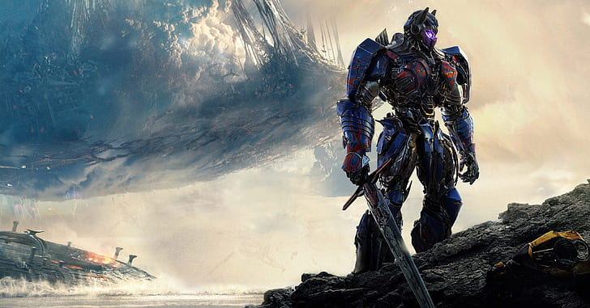

Optimus Prime là một Cybertronian, một loài ngoài trái đất gồm các dạng sống rô-bốt mô-đun tự cấu hình có tri giác (ví dụ: ô tô và các vật thể khác),
một sự pha trộn tổng hợp giữa quá trình tiến hóa sinh học và kỹ thuật công nghệ. Trong hầu hết mọi phiên bản của thần thoại,
Optimus là thủ lĩnh của Autobots, một phe của Transformers là đối thủ của Decepticons, một phe khác.
Anh ta được xác định bởi tính cách đạo đức mạnh mẽ và hầu như luôn được miêu tả là anh hùng chính của câu chuyện,
chống lại thủ lĩnh Decepticon Megatron.
Optimus Prime (trước đây gọi là Orion Pax) thường xuyên, nếu không muốn nói là luôn luôn,
được miêu tả là có tư cách đạo đức mạnh mẽ , khả năng lãnh đạo xuất sắc và kỹ năng ra quyết định sáng suốt ,
đồng thời sở hữu các chiến thuật quân sự xuất sắc , võ thuật mạnh mẽ và vũ khí tiên tiến ngoài trái đất.
Optimus Prime có ý thức mạnh mẽ về danh dự và công lý, tận tâm xây dựng sự cùng tồn tại hòa bình và cùng có lợi với con người,
bảo vệ sự sống và tự do của tất cả các loài có tri giác. Với tư cách là người mang Ma trận Lãnh đạo hiện tại ,
Optimus Prime là thủ lĩnh trên thực tế của Autobots, một phe của một loài trí tuệ tổng hợp đang biến đổi từ hành tinh Cybertron.
Các Autobot liên tục tiến hành cuộc nội chiến chống lại một phe đối thủ gồm những người máy biến hình có tên là Decepticons .

Thế hệ đầu tiên Optimus Prime biến thành một chiếc Freightliner FL86 cab trên xe bán tải .
Trong rương của anh ta là một lá bùa thần bí, được gọi là Ma trận Lãnh đạo Autobot hay "Ma trận Sáng tạo",
được mang bởi tất cả các thủ lĩnh Autobot. Khi Optimus biến hình, buồng lái máy kéo của anh ta bị ngắt kết nối để trở thành một
người máy có tri giác, và xe kéo của anh ta mở ra để lộ một máy phát ion, tạo thành một sàn chiến đấu.
Boong chiến đấu hỗ trợ một trạm chiến đấu di động và sở chỉ huy được trang bị các loại pháo và vũ khí chùm bắn tự động.
Ban đầu, Optimus Prime được tạo ra với tư cách là thủ lĩnh của Autobots, mặc dù không biết anh ta được tạo ra như thế nào hoặc nguồn gốc của anh ta.
Trong một tương lai có thể xảy ra, Megatron bị đe dọa bởi sự tồn tại của Aerialbots và đã nhờ Shockwave chế tạo một cỗ máy thời gian để
đưa chúng quay ngược thời gian để loại bỏ chúng. Tuy nhiên, cuối cùng anh ấy chỉ thay đổi lịch sử theo chiều hướng tốt hơn.
Trong dòng thời gian sửa đổi, Optimus Prime bắt đầu cuộc sống của mình với tư cách là một người máy tên là Orion Pax ,
một công nhân bến tàu hầu như không có khả năng tự vệ trong Thời kỳ hoàng kim của Cybertron chín triệu năm trước,
cùng với một người bạn gái tên là Ariel và một người bạn thân nhất tên là Dion .. Trong thời gian này, một giống người máy mới với khả năng
bay mới đã xuất hiện trên hành tinh mà Orion ngây thơ và những người máy trẻ tuổi khác thần tượng. Khi Megatron,
thủ lĩnh của nhóm người máy mới, tiếp cận anh ta để hỏi về việc sử dụng một trong những nhà kho ở bến tàu,
Orion đã bị Megatron lay chuyển. Orion, Ariel và Dion bị thương nặng khi Megatron và lực lượng của hắn tấn công nhằm lấy năng lượng dự trữ ở đó.

Sau trận chiến, Prime bắt đầu trải qua sự thôi thúc trong tiềm thức, dẫn cả Autobots và Decepticons đến Vòng Bắc Cực. Khi họ đến, Shockwave đã ở đó để bắt họ như tội phạm chiến tranh. Shockwave đã thành công trong việc kết thúc cuộc chiến trên Cybertron, nhưng Prime sớm rơi vào tay một nhóm Autobot nổi loạn đã phát hiện ra Shockwave có chương trình lớn hơn. Tập hợp các Transformers trên khắp Cybertron để làm chính nghĩa, Prime đối mặt với Shockwave, nhưng đã bị đánh bại và Ma trận bị xé toạc khỏi anh ta và được sử dụng để kích hoạt Vector Sigma. Tuy nhiên, trước khi Shockwave có thể tận dụng hết dữ liệu của siêu máy tính, Ultra Magnus, anh trai của Prime, đã đến và đánh bại anh ta. Những vết thương mà Prime mắc phải trong cuộc xung đột này đòi hỏi một thời gian phục hồi kéo dài trong tình trạng đình trệ, nhưng việc Dreamwave đóng cửa có nghĩa là Prime không bao giờ xuất hiện trên các trang của họ nữa. Hình ảnh từ các vấn đề chưa được phát hành sau đó cho thấy Optimus Prime thức tỉnh từ buồng tái sinh lạnh và giải phóng Alpha Trion khỏi phòng thí nghiệm của Shockwave.
